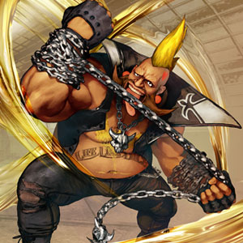

Birdie combines brawling with wrestling. His favorite techniques involve headbutting the opponent through the use of his attacks, Bull Head and Bull Horn.
 Bull Horn offers a moment of invulnerability before attacking so it can be used to avoid projectiles and other attacks. It can be charged up much like Balrog's Turn Punch, but unlike Turn Punch it hits multiple times. His Bull Head is a full on charging headbutt but using it leaves him completely open so the player should use it carefully. His arsenal of moves also include grappling techniques, Bandit Chain and Murderer Chain. The player should use his other attacks to get in close, then pull off his grappling techniques to cause damage. He also has good air superiority and priority with his standing fierce and roundhouse.
Prior to his criminal career, Birdie was a professional wrestler, teaming with occasional rival Titanic Tim (from the Slam Masters series) as the "500 Million Trillion Powers". He turned to a life of crime when his wrestling career ended, doing some street fighting on the side to add to his income, as well as nightclub bouncing. His notoriety got him invited to the first World Warrior tournament. He was apparently sick during the tournament (causing him to look paler). He also lost his fight with Ryu.